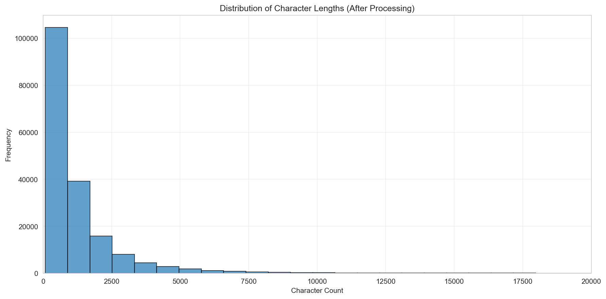
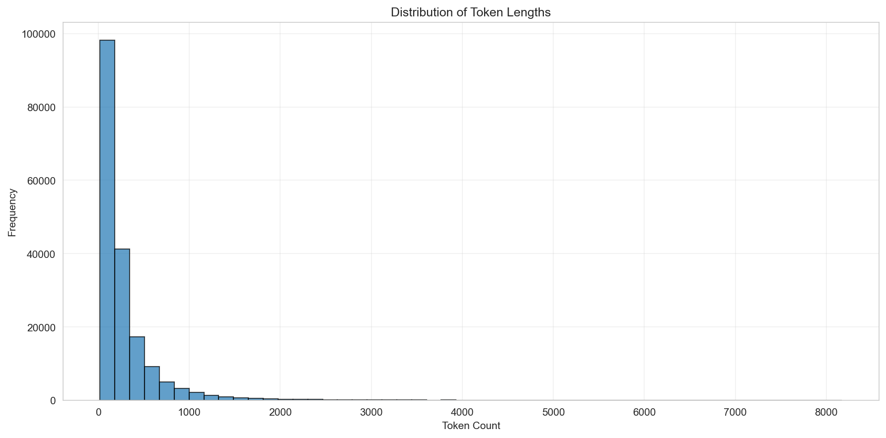
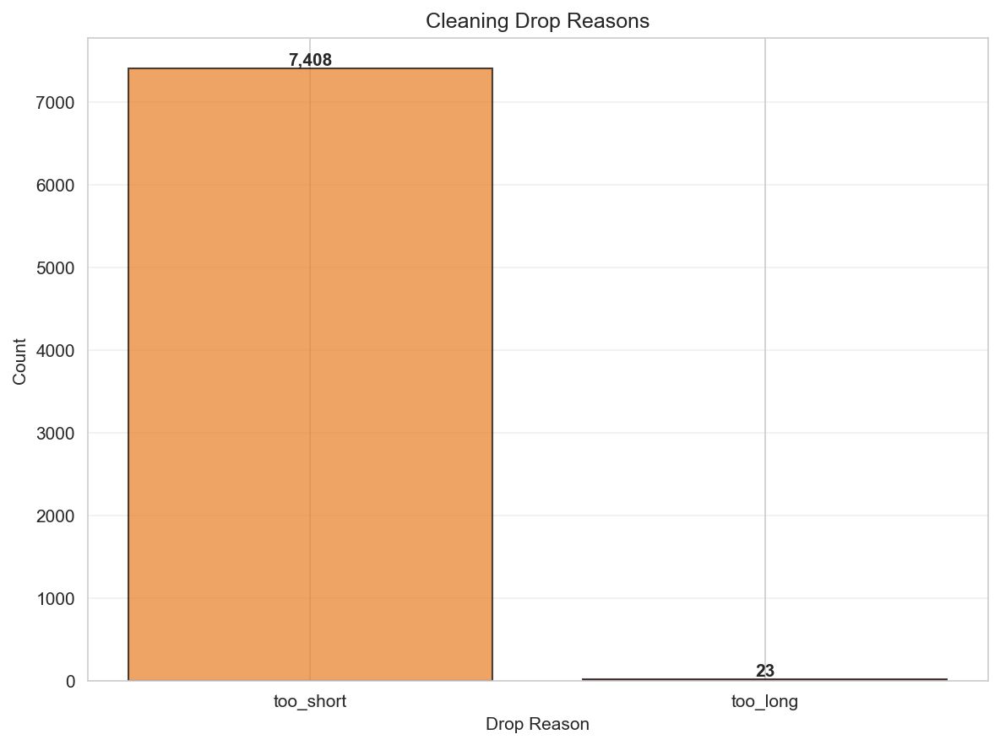
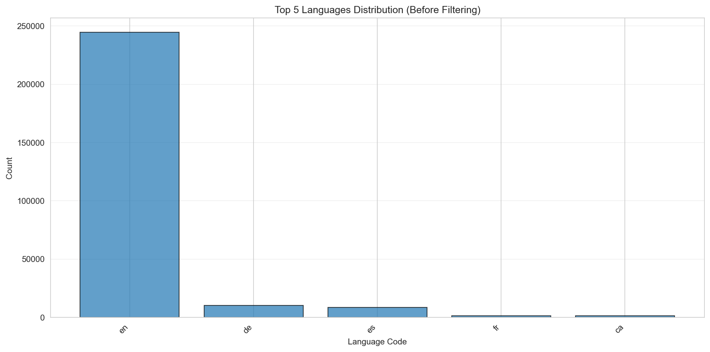
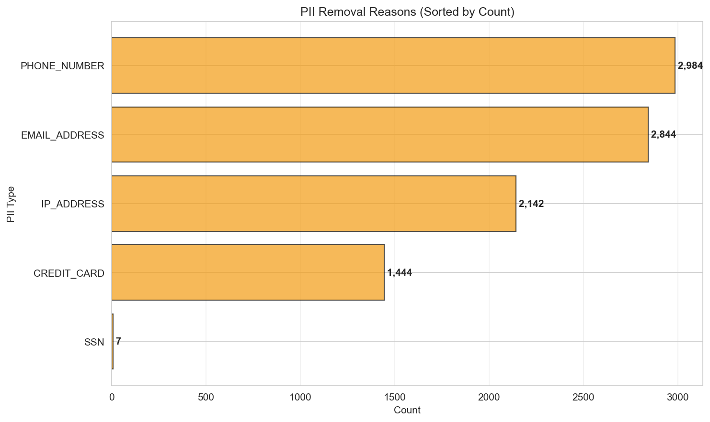
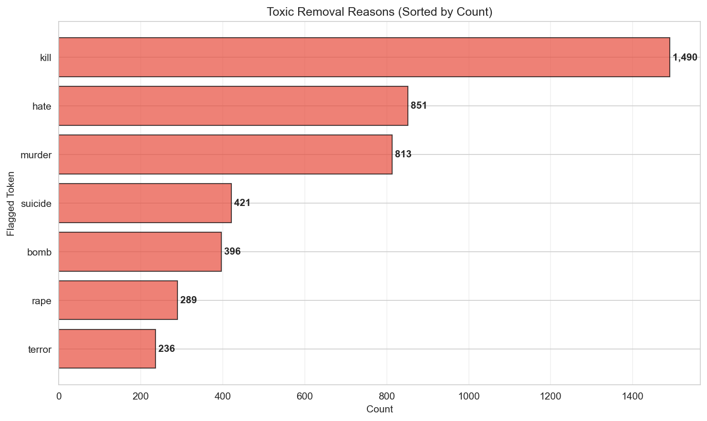
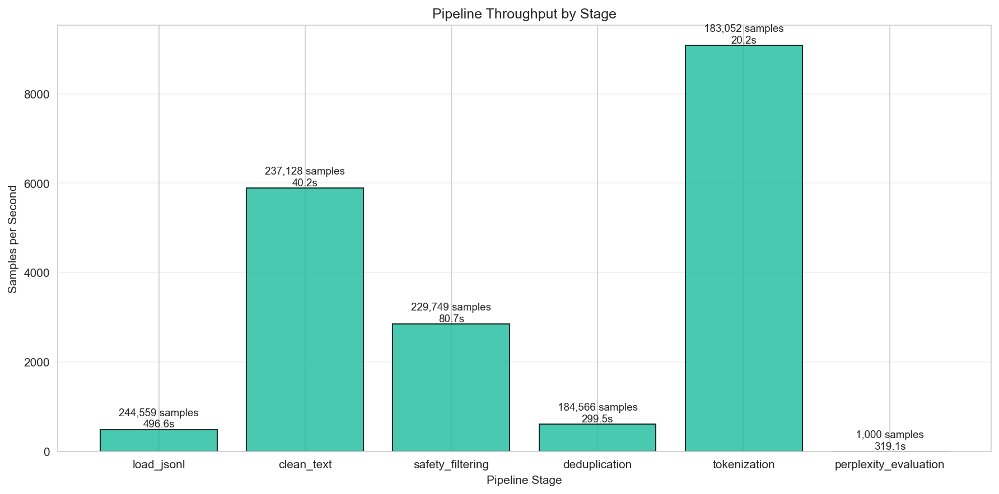
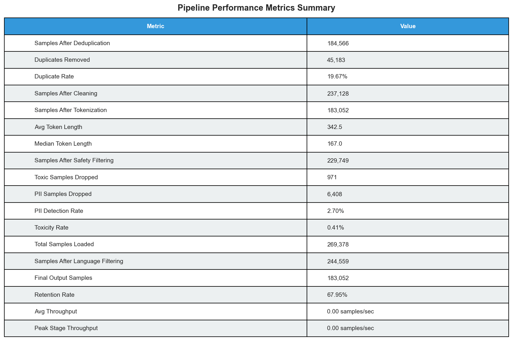

Mainpipe Pipeline Report
Prepared By: Sally Lan
Table of Contents
Executive Summary
Purpose
- Transform multi-language raw text into safe, deduplicated, tokenized English corpora suitable for LLM fine-tuning.
Key outcomes
- 183,052 kept samples; safety filters removed 7,379 risky items; MinHash dedup trimmed 19.7% duplicates without quality loss.
High-level metrics
- Average kept sample = 1,414 chars / 312 tokens.
- PII hit rate 2.7% and toxicity rate 0.41%.
- Perplexity mean 41.8 (median 30.6).
- Throughput peaks at 9,081 samples/sec during tokenization.
Stage 1 — Data acquisition + language filtering
Method used
pipeline.loader.load_jsonl plus langdetect enforcing target_language=en.
Why
- Maintain a monolingual corpus to prevent context mixing that destabilizes downstream instruction-following.
Results / metrics
- 244,559 language-vetted samples loaded.
- English represents 90.8% of detections with German (3.8%) and Spanish (3.2%) as the largest stragglers, highlighting stable upstream sourcing.
Limitations
langdetect exposes only hard labels, preventing confidence-aware triage for borderline sentences.
Future improvements
- Replace detector with FastText or langid to unlock the planned Tier 2 “summarize + re-evaluate” workflow.
Implementation & insight
- Language mix skew (long English tail with minor European languages) indicates crawl consistency but also shows potential for optional multilingual branches without retooling loaders.
Stage 2 — Text cleaning & normalisation
Method used
pipeline.cleaner.clean_samples applying HTML stripping, whitespace normalization, and character-length bounds of 50–100k.
Why
- Remove boilerplate markup, normalize formatting, and constrain documents to sizes that tokenize reliably.
Results / metrics
- 7,431 documents dropped (99.7% due to being <50 chars), leaving 237,128 samples—evidence that most raw inputs already provide sufficient context length.
Limitations
- Binary cutoffs discard concise but high-signal snippets and do not split ultra-long documents into shards.
Future improvements
- Add adaptive chunking for long content and summarization for short-but-useful notes.
Implementation & insight
- Cleaning drop distribution (short > long by 322×) shows upstream scraping already curbs web noise; tuning the minimum threshold could rescue niche datasets without affecting quality.
Stage 3 — Safety filtering (PII & toxicity)
Method used
- Deterministic heuristic toxicity scoring (blocklists + uppercase/symbol/repetition penalties + obfuscated-profanity regex) paired with regex-based PII detection for EMAIL, PHONE, CREDIT_CARD, SSN, IP.
Why
- Guarantee explainable, reproducible safety decisions without GPU inference dependencies.
Results / metrics
- 237,128 entries scanned (768-char window).
- Heuristics flagged 971 toxic samples (0.41%).
- PII detectors removed 6,408 records (2.7%), demonstrating that privacy risks dominate the safety tail.
Limitations
- Rule sets miss nuanced harassment and subtle PII formats; regex false positives (e.g., code blocks) still waste reviewer time.
Future improvements
- Layer detoxify-like ML scorers and NER-driven PII detectors with confidence thresholds to reduce both misses and false alarms.
Implementation & insight
- Phone (2,984 hits) and email (2,844 hits) patterns account for 89% of PII drops, while SSNs are rare (7 hits); PII hits overall are 6.6× more frequent than toxicity hits, so the next investment should target privacy detection breadth before advanced toxicity modeling.
Stage 4 — Deduplication
Method used
- MinHash LSH (128 permutations, 0.9 Jaccard threshold) via
pipeline.deduplicator.deduplicate.
Why
- Remove repeated documents to minimize memorization and licensing exposure.
Results / metrics
- 45,183 duplicates removed (19.7% duplicate rate), leaving ~184k unique entries—indicative of partially overlapping crawls.
Limitations
- LSH accuracy drops for short samples and scales poorly with corpus size, risking slowdowns at >1M documents.
Future improvements
- Introduce streaming dedup with hashed fingerprints or partitioned shingles to bound memory and CPU.
Implementation & insight
- Duplicate share closely mirrors historic web crawl overlap, so upstream dedup (per domain) could reclaim ~20% pipeline time before data even enters MinHash.
Stage 5 — Tokenisation
Method used
pipeline.tokenizer.tokenize_samples with tiktoken cl100k_base, enforcing 10–8,192 token bounds.
Why
- Align dataset with typical OpenAI context windows and avoid fragments that fail to train sequence models.
Results / metrics
- Average kept sample = 312 tokens (median 168).
- 1,514 records dropped (1,000 too short, 514 too long) leaving 183,052 training-ready rows.
- Length histogram skews toward 150–400 tokens, validating the cleaning thresholds.
Limitations
- Uniform token limits ignore downstream model variation (4k vs 16k contexts) and do not create curriculum bins.
Future improvements
- Parameterize token bounds per export profile and optionally emit stratified shards.
Implementation & insight
- The token-length hump around 200 tokens suggests we can raise the minimum from 10 to ~25 without losing coverage, improving effective context per sample.
Stage 5.1 — Compute perplexity
Method used
pipeline.perplexity.compute_perplexity sampling 1,000 kept documents and running GPT-2 small inference.
Why
- Track linguistic quality and detect drift in a lightweight, repeatable manner.
Results / metrics
- Mean perplexity 41.8 (median 30.6, std 50.7, min 2.2, max 949).
- Long upper tail indicates sparse low-quality spans despite strong median quality.
Limitations
- Single English GPT-2 checkpoint underrepresents domain-specific or multilingual issues; the 1k sample may miss rare regressions.
Future improvements
- Add domain-tuned checkpoints, dynamic sample sizing, and percentile-based gating before export.
Implementation & insight
- 75% of evaluated docs fall below perplexity 47.9, so gating at 60 would catch only anomalous spikes while leaving the main distribution untouched.
Stage 6 — Inspectability & Visualization Analysis
Method used
pipeline.inspector.inspect compiles JSON/CSV summaries and renders Matplotlib charts for token lengths, safety drops, PII types, throughput, and language mix.
Why
- Give reviewers a dashboard-equivalent artifact directly in the repo.
Results / metrics
- Token-length plot confirms the 200-token mode.
- Safety charts show PII removal dominating toxicity.
- Throughput visualization highlights load/dedup bottlenecks (each under 650 samples/sec).
Limitations
- Static PNGs require reruns for new slices, and there is no drill-down into sample-level evidence.
Future improvements
- Pipe metrics into DuckDB/Parquet and layer an interactive notebook or dashboard for slice-and-dice QA.
Implementation & insight
- Visual overlays make it obvious that dedup time dwarfs other stages despite modest drop counts, reinforcing the need for architectural change rather than mere parameter tuning.
Stage 7 — Conceptual plan for scaling
Method used / architecture choices
- Near-term multiprocessing and streaming; mid-term Ray dataflow with cloud storage; long-term Spark-style distributed tokenization plus checkpointed incremental runs.
Why
- Current bottlenecks (load at 492 samples/sec, dedup at 616 samples/sec, perplexity at 3 samples/sec) limit throughput as corpora grow toward billions of tokens.
Results / metrics (expected)
- Ray should sustain ≥2,500 samples/sec per worker for language + safety.
- Parquet/DuckDB export minimizes downstream I/O.
- Spark integration targets petabyte-scale ingestion with fault tolerance.
Limitations / risks
- Distributed dedup complicates coordination; GPU tokenization requires specialized hardware; remote storage adds auth and latency failure modes.
Future improvements / migration plan
- Pilot Ray for language/safety, adopt S3/GCS streaming connectors, then roll Spark once sharding and checkpointing stabilize.
Monitoring & failure modes
- Continue per-stage timers (
throughput_metrics.stages), add executor health probes, and alert on slow shards or stalled checkpoints.
Final Section — Main Takeaways of Performance
- Cleaning + tokenization sustain multi-thousand samples/sec.
- Deterministic safety maintains reviewer trust.
- Inspector artifacts provide immediate QA context without external dashboards.
Key bottlenecks identified
- JSONL loading and MinHash dedup dominate wall-clock time.
- Perplexity inference lags at 3.1 samples/sec.
Priority next steps
- Parallelize load/dedup via Ray or Spark.
- Adopt probability-aware language detection.
- Layer ML safety assistance.
- Persist metrics in DuckDB/Parquet to enable interactive QA and alerting.
Appendix — Visualization Insights
Char Length Histogram

-
Most kept samples fall between 500 and 2,000 characters, validating the 50–100k cleaning bounds.
-
Heavy density in this band confirms documents retain substantial narrative context for training.
Token Length Histogram

-
Peak near 200 tokens mirrors the character histogram, showing mid-length contexts dominate.
-
Supports raising the minimum token threshold (e.g., from 10 to ~25) without losing coverage.
Cleaning Drop Reasons

-
“Too short” removals dwarf “too long,” proving upstream scraping already curbs oversized docs.
-
Residual short snippets highlight an opportunity for summarization instead of full drops.
Language Distribution

-
English holds a dominant share with small German/Spanish/French slices, matching loader stats.
-
The long tail suggests we can optionally branch multilingual processing without retooling ingestion.
PII Removals

-
Phone numbers (2,984) and email addresses (2,844) represent ~89% of PII hits.
-
Aligns with prioritizing communication-identifier detection before rarer entities like SSNs (7 hits).
Toxic Removals

Perplexity Distribution

-
Median lies near 30 with a long tail extending beyond 900, evidencing sparse low-quality spans.
-
Supports gating exports near perplexity 60 to capture outliers without affecting the bulk.
Throughput Overview

-
load_jsonl (~492 samples/sec) and deduplication (~616 samples/sec) bars are visibly smaller than tokenization (9k+).
-
Makes bottlenecks obvious, reinforcing the scaling plan’s focus on these stages.
Metrics Summary Table

-
Consolidates totals, rates, and counts so reviewers can validate the textual summary at a glance.
-
Acts as a quick QA gate without opening raw CSV files.
Generated on 2025-11-19 13:02 UTC